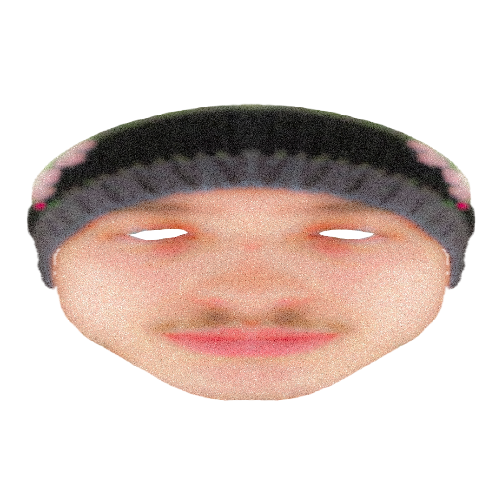

En freelance depuis maintenant quatre ans, je me charge de concevoir divers supports visuels imprimés comme numériques : identités visuelles, affiches, campagnes numériques, animations 2D/3D, illustrations... et ce pour des clients de domaines variés comme la musique, le streaming, la mode, l’évènementiel ou encore la restauration.
